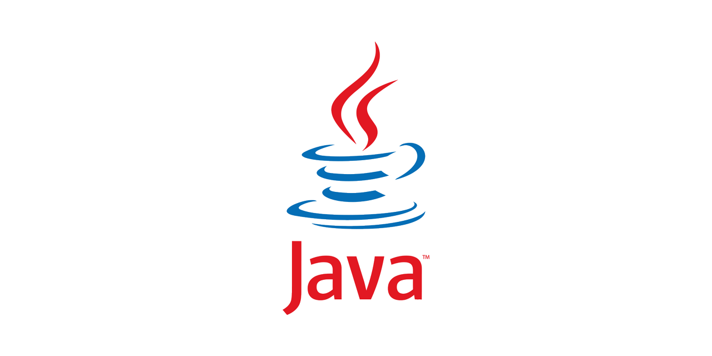

Java 는 Sun Microsystems가
1995년에 처음 출시한 프로그래밍 언어 및 컴퓨팅 플랫폼입니다.
Java 코드는 다양한 하드웨어 및 운영 체제에서 실행할 수 있는
이식 가능하도록 설계된 클래스 기반 객체 지향 언어입니다.
Java 는 엔터프라이즈급 애플리케이션, 모바일 앱,
비디오 게임 및 기타 유형의 소프트웨어 개발에 널리 사용됩니다.
JVM ( Java Virtual Machine)을 지원하는 모든 플랫폼에서 실행되도록
Java 코드를 컴파일할 수 있으므로
"한 번 작성하고 어디서나 실행"이란 철학으로 잘 알려져 있습니다.
또한 Java 에는 개발자를 위한 풍부한 라이브러리와 프레임워크가 포함된 크고 활동적인 에코시스템이 있습니다.